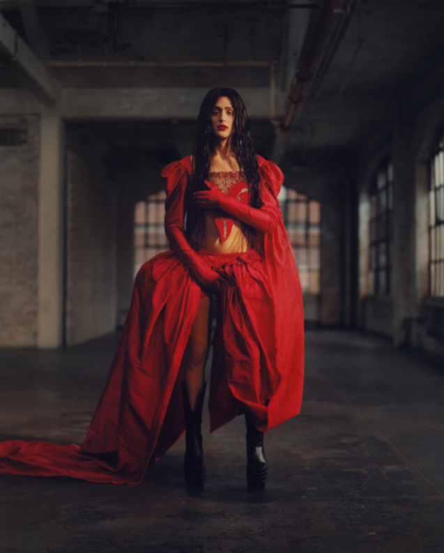
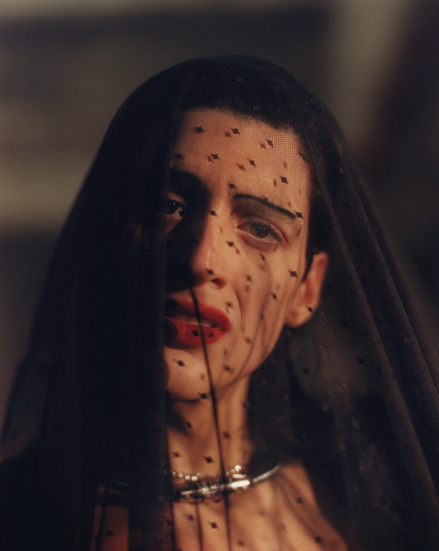
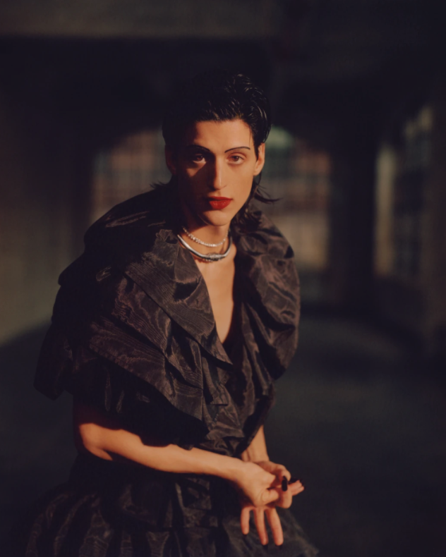

For years, the performance artist and musician has been a secret weapon for creative catalysts like Kanye West and Björk. With the release of her latest album, she’s staking her own claim.
Alejandra Ghersi won’t stop moving. The artist known as Arca has FaceTimed in from her apartment in Barcelona, and in the span of a 90-minute conversation, holding the phone up to frame her graceful face, she’s dizzyingly paced around the place enough for at least 20 laps, periodically taking a breather by crashing into the seats of various chairs, only to get up again and start roving. “I have an easier time thinking, getting my thoughts out, when I’m walking. Do you not feel that?” she offers, through a Mona Lisa smile, as an easy explanation for her perpetual motion. This tendency toward velocity, though, points to a larger truth about Ghersi’s life and career over her past decade or so as Arca: Staying in one contented place, it would seem, is not only not a virtue, it might even be bad for you. “We don't have to be any one fixed thing in a nonstop way in order for us to be normal,” she says. “When are we ever not in flux? We’re literally, like, fucking fluid.”
This is what Ghersi has come to represent in the world of pop culture and electronic music, as is expressed wonderfully on her jolting and genre-crushing forthcoming fourth studio album, KiCk i: the freedom to change as you need or wish, in an instant and all the time, whenever and wherever you are, in real life and on social media, to live not at fixed poles but in between them. The most outward symbol of her mutability has been her persona and gender, which she has been generously up front about as it has evolved; under the glare of Instagram and the public spotlight, she has transitioned from identifying as a gay male into identifying as nonbinary (which is also the name of the album’s opening song) and more recently as female, advancing her presentation right in front of our eyes. But Ghersi, born and (mostly) raised in Venezuela, hopes to bring multitudes to everything. “We all have multiple personalities. Rather than causing panic, I think maybe that could cause some relief,” she says. “There was a clear intention [on the album] to allow every self to express itself. Not to decide how much air time each self would get, but to allow for modulation between them in a spontaneous way. There is no such thing as normal.”
Ghersi first broke through in 2012 with Stretch 2, a sexy, twisted EP of booty bass in which pop and rap samples sounded like they were run through a food processor, her voice pitch-shifted into a frog-like croak at times and a buzzing metallic twang at others. By her last album, 2017’s self-titled release, she was embodying an operatic diva, singing ballads in her native Spanish with a deep bellow. On KiCk i, she runs the gamut, from sweet pop to clanging drum and bass to speedy duets with urbano superstar Rosalía. There are a number of guest contributions, which points to another of Ghersi’s skills: She is a consummate collaborator—it was, in fact, her production work on Kanye West’s gritty masterpiece Yeezus in 2013 that made her famous beyond the world of underground electronica. Björk, a close creative partner who sings on KiCk i, told me in a 2017 Pitchfork interview that working with Ghersi is like merging, as “when you merge with another person, when you lose yourself.” “She is incredibly versatile,” Björk followed up more recently by email. “She has the courage to embrace all different moods and situations. Fragile mornings, intense work focuses, sweaty [nights out at the club]. We are both firm believers of never doing the same thing twice. Each experience has been completely different.”
“She’s exploring frontiers and intersections that feel new to me,” The Shed’s founding artistic director, Alex Poots says. “I wrote to her the other day, ‘You’re a glimpse of a future I hope for.’”
“She’s exploring frontiers and intersections that feel new to me,” The Shed’s founding artistic director, Alex Poots says. “I wrote to her the other day, ‘You’re a glimpse of a future I hope for.’”
Ghersi calls her own music a “speculation”—an idea she says is borrowed from sci-fi writer Octavia Butler—that offers “a playful hypothesizing about...how you wish the world were.” In her fantasia, you can transmute in an instant: Ghersi plays around a lot with vocal modulation, her voice bouncing very quickly between heavenly and devilish, male and female, big and small, close and far, loud and soft, high and low. In appearance, she creates something truly uncanny, too, often fusing her human body with the aesthetics of anime and the cyborg, and blurring the line between performance and life. Pulling up to a recent dinner for the CFDA/Vogue Fashion Fund in New York, she climbed on top of a car to seductively pose for paparazzi, wearing a long black wig and mini blue lights over her eyes, looking like some kind of AI mannequin come to life. “That was fucking crazy,” she says of the night. “I don't think it [was] simply a façade, or anxiety, or mania. I think there [was] truly something vibrant and joyous and celebrational that [could] be felt in the air.”
This performative flame was brightest at her recent residency, Mutant;Faith, held last September at the brand-new $500 million performance-art center The Shed. The four-part program featured a set of moving components—with everything from a mechanical bull to a stripper pole to a grand piano to a dirt pit—that shifted as Ghersi improvised on-stage, singing and contorting on top of cars and in mechanical legs. “It all looked effortless, but to actually create that situation—and to literally change the set as you go along—is complicated to achieve,” says Alex Poots, founding artistic director of The Shed. “There was no script to work off of. Every night was changing. There was no order of play. It kept everyone on their toes in really interesting ways.” In Ghersi’s ability to adapt and metamorphosize, Poots sees possibility—personal, political, artistic. “She’s exploring frontiers and intersections that feel new to me,” says Poots. “She’s a combination of thoughtful and instinctive, with an expansive understanding and experience, but then this chameleon-like ability to respond in the moment. I wrote to her the other day, ‘You’re a glimpse of a future I hope for.’”
Ghersi’s tendency toward make-believe and illusion started early. She was born in Caracas, but her family brought her to Darien, Connecticut, as a kid. “A white-picket-fence town, with deer and ticks,” she says. None of the other kids could pronounce her given name, so they called her Alex. When her family eventually moved her back to Caracas, her time in the States made her an outsider in her own country. “I got bullied so crazy,” she says. She’d daydream about English-language pop culture she remembered from America that wasn’t as available in Latin America, like the Nickelodeon show The Secret World of Alex Mack, a children’s sci-fi program in which the main character can melt her body into metallic goop. “I was Alex Mack in Caracas. I still had my plaid button-down shirts from the Gap, and I would tie them around my waist [like the character],” she says. As she got older, she became musical, first playing the furruco, a Venezuelan folk instrument sometimes called a friction drum, and then eventually finding her way to the beat-making software Fruity Loops to make her first electronic productions, work she remembers as “vanilla and glitchy.”
She made it to New York at 17 to attend the prestigious Clive Davis Institute of Recorded Music at NYU, and eventually fell in with a vibrant downtown electronic and queer scene that percolated around the GHE20G0TH1K parties. In 2012, she released the career-making EPs Stretch 1 and Stretch 2, truly bizarre explorations of the limits of sound patched together with gnarled and dirgey Clipse and Madonna samples. Though the output was certainly avant-garde, Arca’s work was also bass-heavy, meaning you could still play it at any wild New York club and keep people on the floor. On top of the beat, her Auto-Tuned voice sang from chipmunk-high to evil-villain-low, sounding something like if the dying supercomputer HAL from Stanley Kubrick’s 2001: A Space Odyssey were MC-ing an extraterrestrial orgy. “I had just moved to Chinatown, and I was trying to make something deliberately that sounded like nothing I had heard before, on purpose,” she says.
“Rather than depicting gender dysphoria, I want to explore gender euphoria,”
“Rather than depicting gender dysphoria, I want to explore gender euphoria,”
Kanye West heard Stretch 2 and enlisted Ghersi to help with production on Yeezus, a mangled examination of race and class in America. From there, she quickly went from niche to widely known, and a series of LPs and mixtapes cemented the Arca sound: some blend of violence and joy, fun and fear, darkness and light. Her star continued to rise through production work for FKA twigs and Björk. And all the while, her gender and sexuality were morphing, with her openly discussing her transition along the way in interviews. Her forthrightness, she explains, is intended in part to provide comfort and inspiration to queer kids. “Rather than depicting gender dysphoria, I want to explore gender euphoria,” she says. “I feel very maternal and very—oh, my God—protective of the people who come out to see me. The decision to [be open] was always catalyzed by what I wanted to have seen more of when I was a kid, because I was trapped within the trap of another trap—in many closets.”
These days, Ghersi has found what sounds like something of a balance between the outrageousness of her public image and the domestic quiet of life with her artist boyfriend of two years, Carlos, in Barcelona. She says it was basically love at first sight, “butterflies” the first time they met. “I love cooking for Carlos. There's a market culture here—you can find beautiful tomatoes. The deformed vegetables are the ones that taste really good,” she says. She still hits the club from time to time. “I need to dance. It's not a joke for me,” she says. She’s been painting, too, showing off a white canvas scrawled in red and black with the words PSYCHO DIVA. She has been fascinated lately by the diva archetype, the way in which a famous woman’s “shiny exoskeleton” of an image can be like a “protective shell” for any vulnerability underneath, and she’s able to channel some of that diva power when, say, climbing on top of a taxi to pose for photographers at a fashion party. “It’s a rush of adrenaline in the moment,” she says. “It's like a character. As if there was a stage.”
“The decision to [come out] was always catalyzed by what I wanted to have seen more of when I was a kid, because I was trapped within the trap of another trap — in many closets.”
“The decision to [come out] was always catalyzed by what I wanted to have seen more of when I was a kid, because I was trapped within the trap of another trap — in many closets.”
And so, in many ways, in her ability to embody and disembody so many roles so swiftly, to see every platform as a theater, to never tire of transformation, Ghersi is the ideal artist—even role model—for our rapidly and always changing times, when there is, as she says, no “normal,” and the exploration of one’s identity has become, more and more, not just a right but a public expectation. An era when the options are limitless but the freedom in that is overwhelming. “She has shown an enormous amount of courage,” says Björk. “She didn’t choose the easy route but tackled the unknown.” Most of all, Ghersi seems to offer a winding and bold way forward—not a script or map to follow, but at least a fire starter: Try things on, shed some of them, tweak yourself here, love yourself there, show off whatever you want, hide what you don’t, sing like a girl, Auto-Tune like a boy, approach the disorienting crumbling of the world’s norms not with dread and anxiety, but with a sense of fun and flirtation. “Playfulness is a pretty important part of it for me,” Ghersi says. “I think it’s what keeps things going.” Keeps things going indeed—even if it’s just in circles around your apartment.